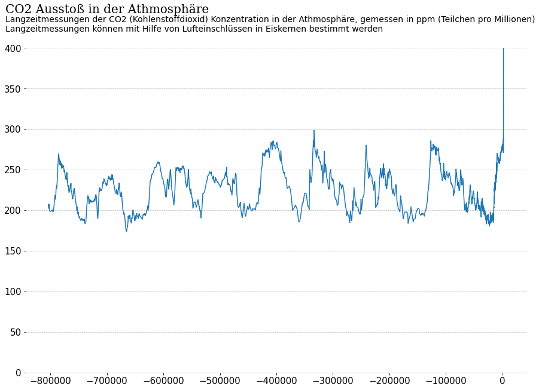

import pandas as pd
import matplotlib.pyplot as plt
df = pd.read_csv("data/co2-concentration-long-term.csv")
| Entity | Code | Year | CO2 concentrations (NOAA, 2018) | |
|---|---|---|---|---|
| 0 | World | OWID_WRL | -803719 | 207.29 |
| 1 | World | OWID_WRL | -803182 | 202.23 |
| 2 | World | OWID_WRL | -802573 | 204.86 |
| 3 | World | OWID_WRL | -802060 | 207.50 |
| 4 | World | OWID_WRL | -801975 | 202.92 |
| ... | ... | ... | ... | ... |
| 1866 | World | OWID_WRL | 2014 | 398.65 |
| 1867 | World | OWID_WRL | 2015 | 400.83 |
| 1868 | World | OWID_WRL | 2016 | 404.24 |
| 1869 | World | OWID_WRL | 2017 | 406.55 |
| 1870 | World | OWID_WRL | 2018 | 408.52 |
1871 rows × 4 columns
# general setup
plt.rc('font', size=15)
# plot
fig, ax = plt.subplots(figsize=[15,10])
ax.plot(df["Year"],df["CO2 concentrations (NOAA, 2018)"], lw=1.5)
# x/y Limits
ax.set_ylim(0,400)
# title
ax.text(-0.04, 1.1, "CO2 Ausstoß in der Athmosphäre", transform=ax.transAxes, font="serif", fontsize=20, ha="left", va="bottom")
ax.text(-0.04, 1.1, "Langzeitmessungen der CO2 (Kohlenstoffdioxid) Konzentration in der Athmosphäre, gemessen in ppm (Teilchen pro Millionen) \nLangzeitmessungen können mit Hilfe von Lufteinschlüssen in Eiskernen bestimmt werden", transform=ax.transAxes, fontsize=14, ha="left", va="top")
# grid
ax.grid(axis='y',color='#BBBBBB', linestyle='--', linewidth=0.7)
ax.set_axisbelow(True)
#ax.yaxis.grid(color='gray', linestyle='dashed')
# remove spines
ax.spines['right'].set_visible(False)
ax.spines['top'].set_visible(False)
ax.spines['left'].set_visible(False)
# color spine
ax.spines['bottom'].set_color('#BBBBBB')
# ax.tick_params(axis='x', colors='#BBBBBB')
